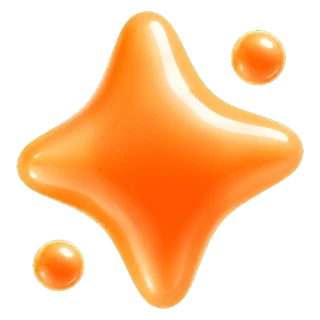
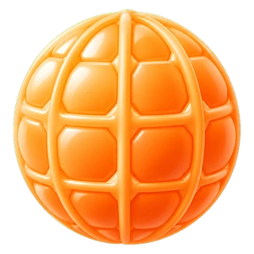

Kalangu is an open-source TypeScript toolkit for AI agents that work on USSD and SMS, keypad phones included.
Built in the open,reviewed by you
Paste this into a terminal on macOS or Linux. It needs Node 20 or later, and no account or API key.
mkdir kalangu-demo && cd kalangu-demo && npm init -y > /dev/null && npm pkg set type=module && npm install --silent @kalangu/core @kalangu/sim && cat > agent.mjs <<'EOF' import { ask, consoleLogger, createAgent, menu, say } from "@kalangu/core"; import { runTerminal } from "@kalangu/sim"; // Any object can be the model. This one takes 6 s on purpose: past the // 4 s USSD deadline, so Kalangu ends the session and texts the answer. const model = { async answer(question) { await new Promise((resolve) => setTimeout(resolve, 6000)); return `Thanks for asking "${question}". A nurse will call you back today.`; }, }; const agent = createAgent({ model, channels: [], // the simulator brings its own phone logger: consoleLogger("warn"), start: menu("Clinic line", { "Opening hours": say("Open Monday to Saturday, 8:00 to 18:00."), "Ask a nurse": ask("Type your question", (q, ctx) => ctx.model.answer(q)), }), }); await runTerminal(agent, { code: "*384*1#" }); process.exit(0); EOF node agent.mjs
A keypad phone opens in your terminal. Dial *384*1#, choose 2 and ask anything. The answer takes 6 seconds, past the 4-second USSD deadline, so it comes by SMS. q quits.
The full example, from the repository (needs pnpm):
git clone https://github.com/utachicodes/kalangu.git && cd kalangu && pnpm install && pnpm demo
Build an agent →Connect a model or gateway →